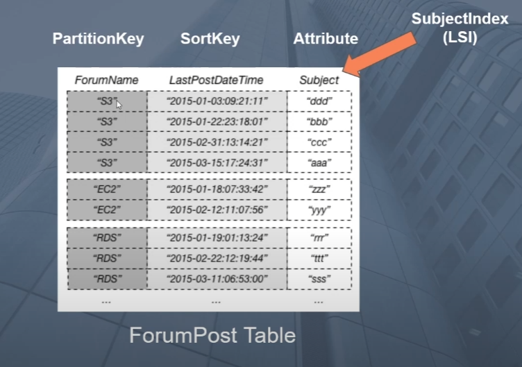

|
i morgen |
aws:dynamo db:walkthrough local secondary index

Senario: Table is defined as shown. How to query Forum Name and Subject
Option 1
- Scan entire table
- Apply filter condition on scan where forum == 'xx' and subject = 'yy
- Con: expensive since you are performing entire table scan
>
Option 2
- Filter for forum name = 'xx'
- Scan result set for subject = 'yy'
- Con: Still more expensive then required since scanning multiple items
Option 3
- Apply a local secondary index on Subject attribute
- Query where forumname = 'xx' and define a range key expression where the subject = 'yy'